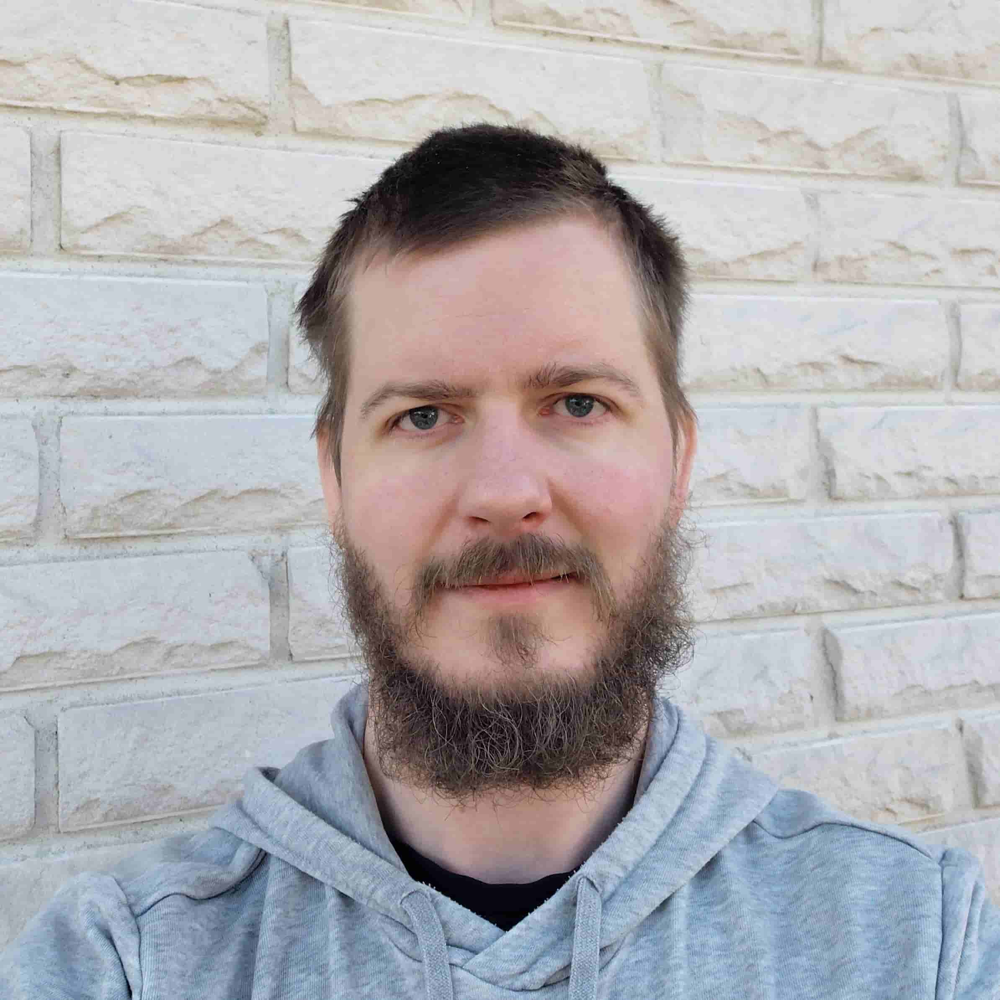

Kuka olen, ja miksi teen tätä

Olen Riku Forsell.
Olen ollut itse hukassa ja jumissa. Yritin käynnistää yritystä, joka ei tuntunut lainkaan omalta jutulta. Onneksi se ei lähtenyt käyntiin. Muuten olisin jäänyt rakentamaan jotain, mikä ei ollut minun.
Siitä lähtien minua on kiinnostanut yksi kysymys: mikä ihmisessä on oikeasti hänen omaansa? En hae uutta ideaa enkä uutta titteliä vaan suuntaa, joka kantaa.
Sva-dharma
Käytän työssäni vanhaa intialaista käsitettä, sva-dharmaa. Se tarkoittaa oman luontaisen suunnan mukaan elämistä. Se ei ole sitä, mitä osaat tai mitä muut sinulta odottavat, vaan sitä, mikä on sinussa jo ja mikä kantaa pitkään.
Siksi en auta vain löytämään ideaa tai työtä. Autan elämään oman suunnan mukaista elämää myös arjessa: siinä, mihin käytät aikasi, rahasi ja voimasi.
Mitä en tee
- En tee tavallista uravalmennusta enkä business-coachingia.
- En anna valmiita vastauksia enkä lupaa, että elämä muuttuu yhdessä illassa.
- En tee terapiaa.
- En myy sinulle seuraavaa kurssia tai ohjelmaa.
Kuulostaako tämä sinun tilanteeltasi?
90 minuuttia. 3–5 konkreettista askelta. Kirjallinen yhteenveto.
Varaa sessio